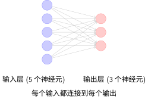

全连接：赤手空拳#
赤手空拳——不看山体结构，20 万参数走不远。
赤手空拳出发——每个像素连接每个神经元，20 万个参数，不做任何假设。很快就发现：这山，爬不远。
站在 MNIST 面前。用的是攀岩的技术——每一块岩石亲手检查，不靠地形判断。784 个像素，全部连到 256 个神经元。200,960 个参数。不多想，先试试。
训练。看结果。能跑，但吃力。
不是参数不够。攀岩的思路放到山上，天然就错了——你把岩壁当成了一堆互不相关的碎石。相邻的像素本来连在一起，偏要一个一个检查。同一个数字"7"出现在左边和右边，偏要学两遍。全连接不假设任何空间结构——代价就是，20 万参数还爬不稳一座 28×28 的小山。
先看这个工具本身。
全连接层（Fully Connected Layer），源于感知机（Perceptron）[Ros58]，是神经网络最基本的构建块。建议回顾激活函数中线性回归→多层感知机的演变。每个输入节点都与每个输出节点相连接——赤手空拳，不留死角。

全连接层结构示意图
备注
全连接层的数学表达
对于输入向量 \(\mathbf{x} \in \mathbb{R}^n\) 和输出向量 \(\mathbf{y} \in \mathbb{R}^m\)，全连接层的变换为：
这正是激活函数中提到的线性变换 \(Wx + b\) 的矩阵形式，其中：
\(\mathbf{W} \in \mathbb{R}^{m \times n}\) 是权重矩阵（所有连接）
\(\mathbf{b} \in \mathbb{R}^m\) 是偏置向量
正如我们在激活函数中看到的，如果没有非线性激活函数，多层全连接等价于单层。这就是为什么代码中需要使用 F.relu()。
为什么堆叠多层有用？#
单层全连接（\(y = Wx + b\)）只能学习线性决策边界——在特征空间中画一条直线或超平面。但现实中大多数问题（手写数字识别、图像分类）的决策边界是高度非线性的。
多层堆叠 + 非线性激活解决了这个问题：
每层变换空间：\(Wx + b\) 对特征空间做旋转、缩放、平移
激活函数折叠空间：激活函数 中我们看到，ReLU 将负区域"压平"到 0，实现了空间的非线性折叠
层数越多，边界越复杂：第一层学直线，第二层组合直线成简单形状，第三层组合形状成复杂边界
3个神经元就能画出复杂边界
决策边界的形成 一节展示了一个惊人的例子：仅用 3 个隐藏层神经元就能划分出任意复杂的不规则区域。每个神经元定义一个"软"半平面，通过乘法（\(n_2 \times (n_1 + n_3)\)）实现门控机制——一个神经元充当"开关"控制其他神经元的输出是否生效。少量神经元的非线性组合就能逼近几乎任何形状的决策边界。
这就是多层感知机（MLP）的核心能力：用简单线性单元的层级组合表达任意复杂的函数。
备注
全连接层的威力
每一层 \(W_i x + b_i\) 做线性变换，每一层 ReLU 引入非线性折叠。三层叠在一起，理论上可以逼近任何连续函数（通用近似定理）。
这正是全连接网络的核心矛盾：表达能力极强（可以学任何函数），但参数效率极低（什么先验都不假设）。
参数数量分析#
数一数装备的重量。全连接层从 \(n\) 维到 \(m\) 维的参数总数：
以MNIST为例，如果将28×28=784像素的图像直接输入到全连接层：
第一层：假设有256个神经元，参数数量为 \(256 \times 784 + 256 = 200,960\)
第二层：从256到128个神经元，参数数量为 \(128 \times 256 + 128 = 32,896\)
输出层：从128到10个类别，参数数量为 \(10 \times 128 + 10 = 1,290\)
总参数数量： 235,146个参数
参数爆炸：全连接的核心问题#
235,146个参数看似不多，但考虑以下问题：
问题 |
说明 |
|---|---|
空间信息丢失 |
784维向量完全打乱了28×28的二维结构，相邻像素在向量中可能相距很远 |
参数效率低 |
每个像素都连接到每个神经元，无论距离多远，没有"局部性"概念 |
过拟合风险 |
参数量大，而MNIST是相对简单的10类分类任务 |
直觉理解：全连接把图像当作"表格"，而非"图片"。它不知道像素 A 和像素 B 是相邻的——就像登山者把岩壁当成散落的碎石，看不到它们本来的连接。这种空间关系必须从零学起。
PyTorch实现#
import torch
import torch.nn as nn
import torch.nn.functional as F
class FullyConnectedNet(nn.Module):
def __init__(self, input_size=784, hidden_size=256, num_classes=10):
super(FullyConnectedNet, self).__init__()
# 将28x28图像展平为784维向量
self.flatten = nn.Flatten()
# 全连接层堆叠
self.fc1 = nn.Linear(input_size, hidden_size)
self.fc2 = nn.Linear(hidden_size, hidden_size // 2)
self.fc3 = nn.Linear(hidden_size // 2, num_classes)
# Dropout层用于防止过拟合
self.dropout = nn.Dropout(0.5)
def forward(self, x):
# 展平：28x28 图像 → 784 维向量
# 这就是"空间信息丢失"的发生点！二维结构变一维
x = self.flatten(x)
# 第一层：784 -> 256
x = self.fc1(x) # 线性变换 y = Wx + b
x = F.relu(x) # 非线性激活（见 activation-functions）
x = self.dropout(x) # 随机丢弃50%神经元，防止过拟合
# 第二层：256 -> 128
x = self.fc2(x)
x = F.relu(x) # 再次激活，增加表达能力
x = self.dropout(x)
# 输出层：128 -> 10（10个数字类别）
# 注意：最后一层不加激活，CrossEntropyLoss内部会应用Softmax
x = self.fc3(x)
return x
# 模型实例化
model = FullyConnectedNet()
print(f"模型总参数数量: {sum(p.numel() for p in model.parameters()):,}")
全连接层的优缺点#
赤手空拳有赤手空拳的账本：
优点 |
缺点 |
|---|---|
实现简单直观 |
忽略空间结构信息 |
理论成熟完善 |
参数数量巨大 |
易于理解和调试 |
容易过拟合 |
计算效率高（小模型） |
对平移不具备鲁棒性 |
适用于非结构化数据 |
需要大量训练数据 |
核心问题：参数效率低下#
235,146 个参数。爬一座 28×28 的小山，太重了。
什么是参数效率？#
指标 |
全连接网络 |
评价 |
|---|---|---|
参数量 |
235,146 |
过多 |
MNIST准确率 |
~98% |
尚可 |
参数效率 |
低 |
用20万参数"记住"数据，而非学会规律 |
问题本质：全连接缺乏归纳偏置——它没有利用"图像是二维的"、"相邻像素相关"这些先验。从贝叶斯角度看，全连接是无信息先验——上山前不做任何假设，每一块岩石都要亲自检查。这是攀岩的思路。登山需要另一种。
你用全连接爬了一次 MNIST。20 万参数。98%。
能用。但代价不对——攀岩的技术放在山上，每一块岩石都要亲自检查。根源只有一个：全连接不看山体结构。
困境 |
摔在哪里 |
登山需要什么 |
|---|---|---|
每一块岩石单独检查 |
参数爆炸 |
局部感受野——只看相邻的 |
山体被压成一条线 |
空间信息丢失 |
保留 2D 结构 |
同一模式每出现一次学一遍 |
"7"在左上和右下是两回事 |
权值共享——一个模式，全图通用 |
这次摔跤不是失败。它是地图——告诉你山的形状是什么，下一件装备要解决什么问题。
卷积：发现装备——走。换登山的思路。
参考文献
Frank Rosenblatt. The perceptron: a probabilistic model for information storage and organization in the brain. Psychological Review, 65(6):386–408, 1958.
贡献者与修订历史
查看详细修订记录
-
dc35df22026-06-14 - Heyan Zhu: refactor: unify into two-chapter mountain-climbing narrative